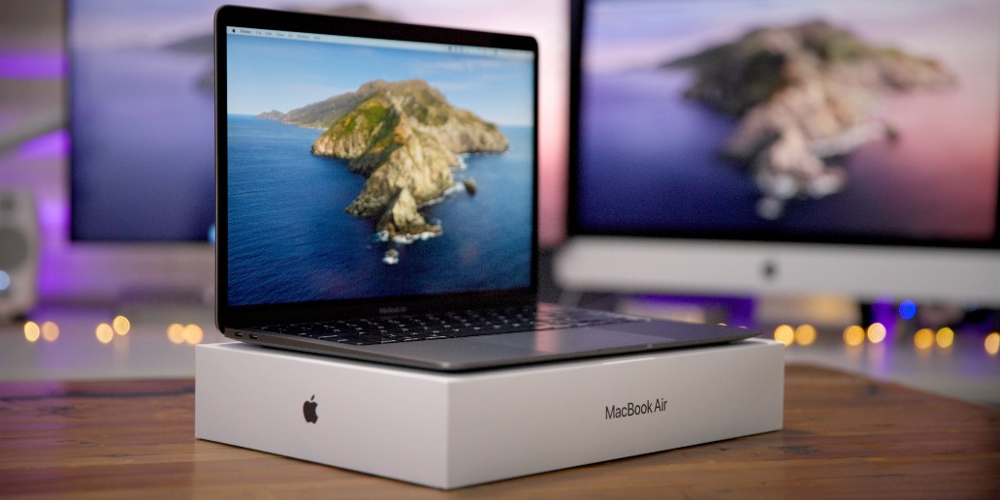
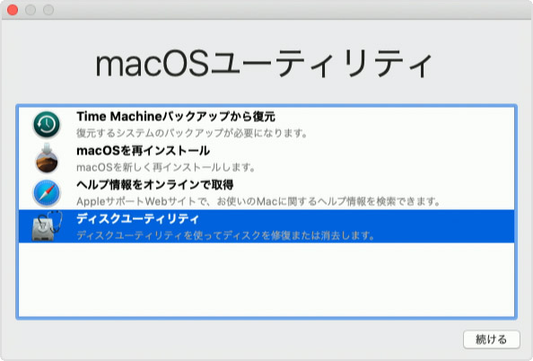
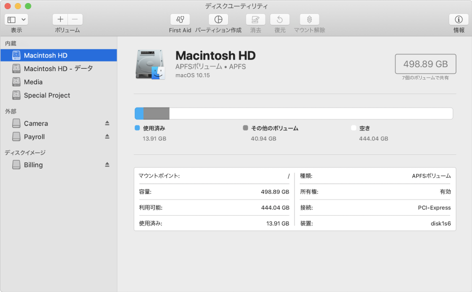

1 Oct 2020
Macの初期化方法

目次
・事前準備（※クリーンインストールのみの場合はスキップ）
・初期化
事前準備
「Macを探す」機能の解除
「Macを探す」が有効になっている場合は解除しておく必要がある。
「リンゴマーク」>「システム環境設定」>「iCloud」>「Macを探す」
iTunes連携の解除
「iTunesを起動」>「メニューバーのStore」>「サインアウト」
iMessage連携の解除
iMessageを使っている場合は連携を解除する。
「メッセージ.app」>「環境設定」>「アカウント」>「サインアウト」
初期化
0. 確認
初期化を実行する前に、以下の2点を確認する。
・電源ケーブルが接続されているか
・インターネットに接続されているか
1. Macを再起動する
2. リンゴマークが表示されるまで「command + R」を押し続ける
3. 「ディスクユーティリティ」を選択

4. ディスクユーティリティのサイドバーで、消去したいボリュームを選択し、「消去」をクリック

5. 任意のファイル・システム・フォーマットを選択し、「消去」をクリック
参考
Macのディスクユーティリティで利用できるファイル・システム・フォーマット
6. 「ディスクユーティリティ」>「ディスクユーティリティを終了」を押下
7. 「macOSを再インストール」を実行
※インターネット接続が必要
Author
Tetsushi Miwa
名古屋工業大学大学院修士1年の三輪哲士です。大学院では社会工学系の専攻に所属しており、経営工学にまつわる勉強をしています。現在の研究テーマは「視覚障害者用の学習アプリケーションの開発について」です。SwiftやObjective-Cを利用してiOSアプリケーションの開発に取り組んでいます。